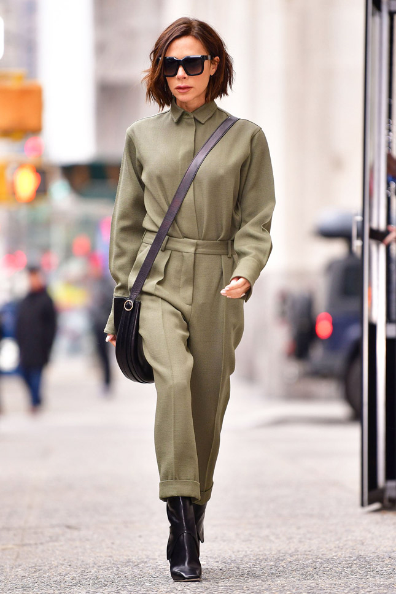
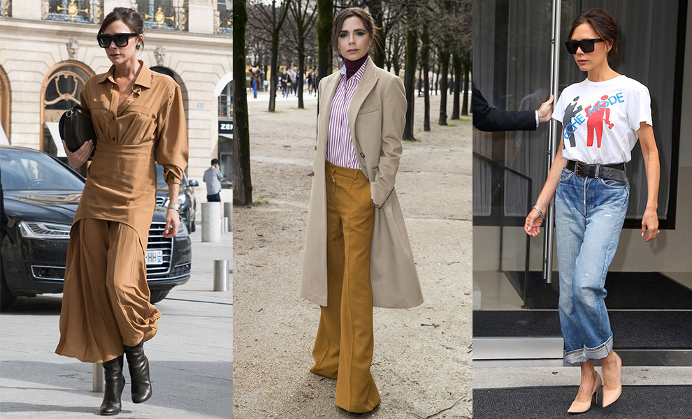
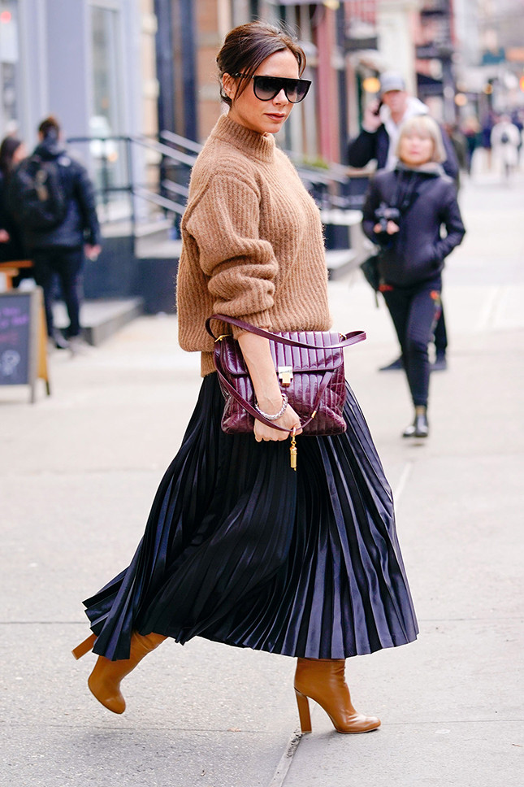

6 модных правил Виктории Бекхэм
Берем на заметку

Виктория Бекхэм — дизайнер, мама, жена и самая главная модница,
каждый выход которой — безусловное попадание в цель. Сегодня она
спешит на деловую встречу в Париже в отлично скроенном брючном комплекте
карамельного цвета, а завтра, надев миди-юбку лососевого оттенка, ужинает
со своим старшим сыном Бруклином, но уже не во французской столице, а дома, в Лондоне.

Виктория — фанат лаконичности, монохромных оттенков и обтекаемых силуэтов.
Вдохновляясь ее образами, мы выделили шесть модных правил, которые следует взять
на заметку этой весной.
1. Носите сумку в руках
Даже если у аксессуара есть плечевой ремень или короткие ручки.
2. Надевайте водолазку под рубашку или платье
Этот элемент гардероба выручает всегда. Но в качестве первого слоя смотрится особенно модно.
3. Заправляйте футболку в джинсы
Это, в конце концов, просто красиво. Заправлять футболку можно и в брюки.
4. Не бойтесь ярких цветов
Вы не будете выглядеть эксцентрично в красном, розовом, голубом и
в вещах других сочных оттенков, если они лаконичного кроя.
5. Иногда вспоминайте про каблуки
Кроссовки — это, безусловно, удобно и круто, но лодочки на
каблуках способны сделать любой образ невероятно женственным.
6. Доверьтесь джинсам клеш
По мнению Виктории Бекхэм, они выручают в любой ситуации.

©Все права защищены.